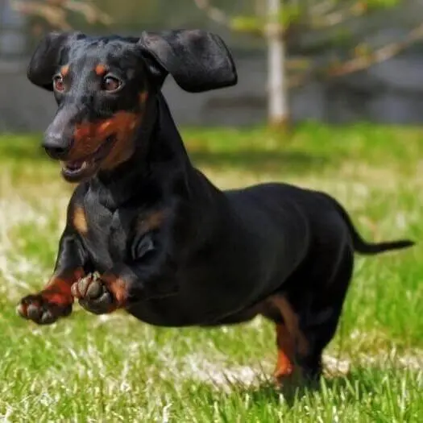

Dachshund Miniatura
(Pelo Sedoso)
O Dachshund Miniatura de Pelo Comprido é um cão de dorso longo, patas curtas e de pequena estatura. Apesar de ter um porte pequeno, o Dachshund tem ainda uma constituição forte e musculosa, com um peito amplo e profundo e pernas dianteiras bem desenvolvidas. Pelagem lisa, macia que pode ter uma variedade de cores (consulte o estalão da raça para obter mais informações).
